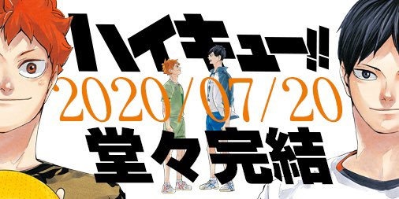

Haikyuu é uma série de mangá de esporte escrita e ilustrada por Haruichi Furudate que fez tanto sucesso que o anime também foi lançado em 2014.
A história conta sobre a trajetória de um estudante do ensino médio chamado Hinata Shoyo e e sua paixão pelo voleibol. Embora não seja muito alto, ele quer seguir os passos do seu ídolo "O pequeno gigante", depois de assistir a um de seus jogos no Nacional. Ao entrar Escola Karasuno, Hinata entra para o time de voleibol e logo no primeiro dia encontra seu inimigo Kageyama Tobio, pelo qual teve seu time massacrado durante um jogo no Fundamental. Eles são obrigados a jogar juntos e formam uma dupla inesperada, porém incrível. Juntos o time da Karasuno enfrenta vários obstáculos e times até o seu tão sonhado sonho de ir até o Nacional e reviver o título e dias de glória da equipe de voleibol da Escola Karasuno.
Infelizmente o mangá foi finalizado no capítulo 402 da série, no dia 20 de Julho. Deixando muitos fã da série com o coração partido, mas cheio de orgulhoso por ter acompanhado durante mais de 7 anos toda a história e evolução dos nossos jogadores favoritos.
O anime atualmente possui 3 temporadas completas. A 4 temporada só tem disponível a primeira parte. Pois a estreia da segunda parte que estava prevista para estreiar em julho foi adiada por causa da pandemia do corona virus. Após o primeiro episódio da primeira temporada é certamente garantido que você vá se viciar no anime. Você vai acompanhar a história dos personagens, ficar nervosa durantes a partidas, torcer pelo time, chorar nas derrotas, mas principalmente vai vibrar a cada ponto feito pelos meninos da Karasuno.
O anime tem jogadas incríveis e até que não saca de voleibol acaba aprendendo a teoria sobre como funciona o esporte. haha
Você também vai conhecer personagens de outros times incriveis e a histórias de seus integrantes e, se apaixonar por eles. Se você quiser acompanhar as eventuras do pequeno Hinata e dos seus companheiros de equipe, você pode assitir em Anime One HD.
Junte-se a esse grande fandom que é a comunidade HAIKYUU nas redes sociais! Lá você vai poder comentar sobre suas jogadas favoritas e compartilhar seus momentos favoritas do anime. ;)